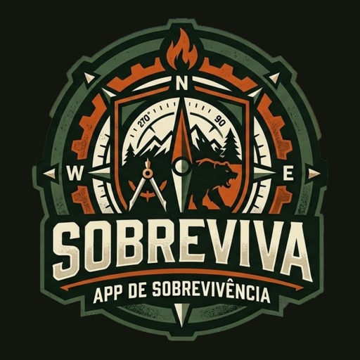
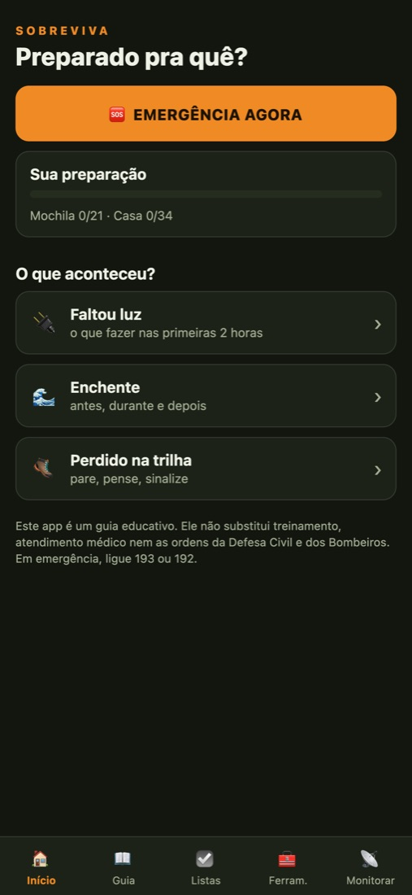
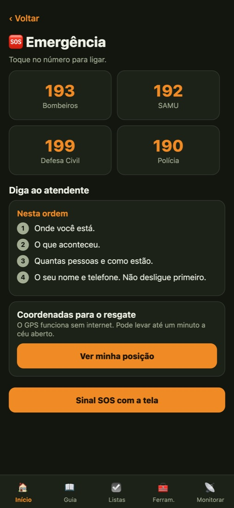
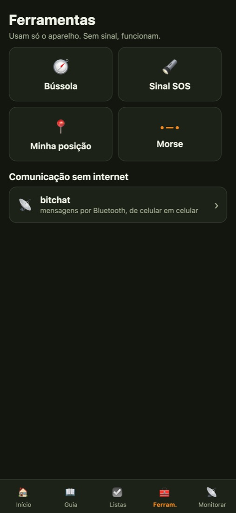
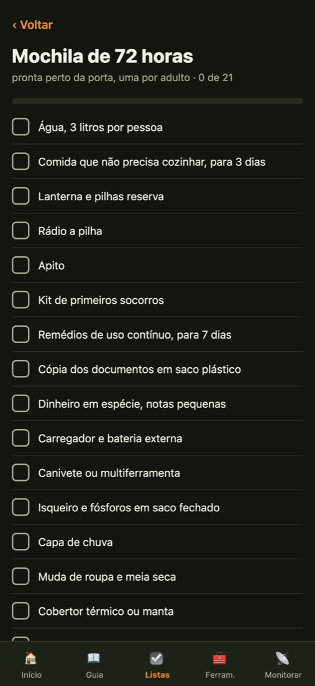

SOBREVIVA
Enchente, apagão, deslizamento, correnteza no mar, perdido na trilha. O Sobreviva mostra o que fazer, passo a passo, em português e sem precisar de internet.
Grátis, sem anúncios. Versão para Android em testes.
Os telefones 193, 192, 199 e 190 em um toque, o que dizer ao atendente e a sua posição para ditar ao resgate.
Atalhos para faltou luz, enchente e perdido na trilha, com os primeiros passos na ordem certa.
Primeiras horas, água, primeiros socorros, orientação, fogo, abrigo, comida, situações do Brasil, energia e dinheiro em crise.
Mochila de 72 horas e casa preparada para duas semanas. Você marca o que já tem e fica salvo no aparelho.
Bússola, sinal SOS pela tela, posição por GPS e código Morse. Nenhuma delas depende de sinal.
Alertas da Defesa Civil por SMS, avisos do INMET, mapa do Cemaden, tábua de marés e queimadas. Só fonte oficial.




Os capítulos de água e primeiros socorros seguem as orientações públicas do Ministério da Saúde, do Corpo de Bombeiros e da Defesa Civil Nacional. Cada capítulo mostra as fontes no fim da página.
O app não pede conta, não coleta dados e não tem anúncio. A localização só aparece na sua tela e não é guardada nem enviada. Política de privacidade.